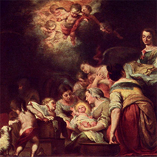

Fiesta de la Natividad de la bienaventurada Virgen María, de la estirpe de Abrahán, nacida de
la tribu de Judá y de la progenie del rey David, de la cual nació el Hijo de Dios, hecho hombre
por obra del Espíritu Santo, para liberar a la humanidad de la antigua servidumbre del pecado.
Con su nacimiento surgió en el mundo la aurora de la salvación, como un presagio de la
proximidad del día. Así lo
reconoce la Iglesia en la fiesta de la Natividad de Nuestra Señora: por tu nacimiento, Virgen
Madre de Dios, anunciaste
la alegría a todo el mundo: de ti nació el Sol de justicia, Cristo, Dios nuestro (Oficio de
Laudes).
Muchos siglos habían pasado desde que Dios, en los umbrales del Paraíso, prometiera a nuestros
primeros padres
la llegada del Mesías. Cientos de años en los que la esperanza del pueblo de Israel, depositario
de la promesa divina,
se centraba en una doncella, del linaje de David, que concebirá y dará a luz un Hijo, a quien
pondrá por nombre Enmanuel,
que significa Dios con nosotros ( Is 7, 14). Generación tras generación, los piadosos israelitas
esperaban el
nacimiento de la Madre del Mesías, aquella que ha de dar a luz , como explicaba Miqueas teniendo
como fondo la
profecía de Isaías (cfr. Mi 5, 2).
A la vuelta del exilio en Babilonia, la expectación mesiánica se hizo más intensa en Israel. Una
ola de emoción recorría aquella tierra en los años inmediatamente anteriores a la
Era Cristiana. Muchas antiguas profecías parecían apuntar en esa dirección. Hombres y mujeres
esperaban con ansia la llegada del Deseado de las naciones. A uno de ellos, el
anciano Simeón, el Espíritu Santo había revelado que no moriría hasta que sus ojos hubieran
visto la realización de la promesa (cfr. Lc 2, 26). Ana, una viuda de edad avanzada,
suplicaba con ayunos y oraciones la redención de Israel. Los dos gozaron del inmenso privilegio
de ver y tomar en sus brazos a Jesús niño (cfr. Lc 2, 25-38).

Nombre:
Natividad (Femenino)
Celebran:
Las Natividad suelen celebrar el
25-dic: Natividad de nuestro Señor
Jesucristo
Celebración:
8 de septiembre
Incluso en el mundo pagano —como afirman algunos relatos de la antigua Roma— no faltaban señales
de que algo muy grande se estaba gestando. La misma pax romana , la
paz universal proclamada por el emperador Octavio Augusto pocos años antes del nacimiento de
Nuestro Señor, era un presagio de que el verdadero Príncipe de la paz estaba a
punto de venir a la tierra. Los tiempos estaban maduros para recibir al Salvador.
Al llegar la plenitud de los tiempos, envió Dios a su Hijo, nacido de mujer, nacido bajo la Ley,
para redimir a los que estaban bajo la Ley, a fin de que recibiésemos la adopción
de hijos ( Gal 4, 4-5). Dios se esmera en elegir a su Hija, Esposa y Madre. Y la Virgen santa,
la muy alta Señora, la criatura más amada por Dios, concebida sin pecado original,
vino a nuestra tierra. Nació en medio de un profundo silencio. Dicen que en otoño, cuando los
campos duermen. Ninguno de sus contemporáneos cayó en la cuenta de lo que
estaba sucediendo. Sólo los ángeles del cielo hicieron fiesta.
De las dos genealogías de Cristo que aparecen en los evangelios, la que recoge San Lucas es muy
probablemente la de María. Sabemos que era de esclarecida estirpe, descendiente
de David, como había señalado el profeta hablando del Mesías — saldrá un vástago de la cepa de
Jesé y de sus raíces florecerá un retoño ( Is 11, 1)— y como confirma San
Pablo cuando escribe a los Romanos acerca de Jesucristo, nacido del linaje de David según la
carne ( Rm 1, 3).
Un escrito apócrifo del siglo II, conocido con el nombre de Protoevangelio de Santiago , nos ha
transmitido los nombres de sus padres —Joaquín y Ana—, que la Iglesia inscribió
en el calendario litúrgico. Diversas tradiciones sitúan el lugar del nacimiento de María en
Galilea o, con mayor probabilidad, en la ciudad santa de Jerusalén, donde se han encontrado
las ruinas de una basílica bizantina del siglo V, edificada sobre la llamada casa de Santa Ana ,
muy cerca de la piscina Probática. Con razón la liturgia pone en labios de
María unas frases del Antiguo Testamento: me establecí en Sión. En la ciudad amada me dio
descanso, y en Jerusalén está mi potestad ( Sir 24, 15).
Hasta que nació María, la tierra estuvo a oscuras, envuelta en las tinieblas del pecado. Con su
nacimiento surgió en el mundo la aurora de la salvación, como un presagio de la
proximidad del día. Así lo reconoce la Iglesia en la fiesta de la Natividad de Nuestra Señora:
por tu nacimiento, Virgen Madre de Dios, anunciaste la alegría a todo el mundo: de
ti nació el Sol de justicia, Cristo, Dios nuestro (Oficio de Laudes).
El mundo no lo supo entonces. Dormía la tierra. J. A. Loarte